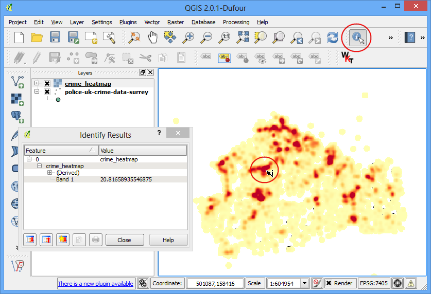
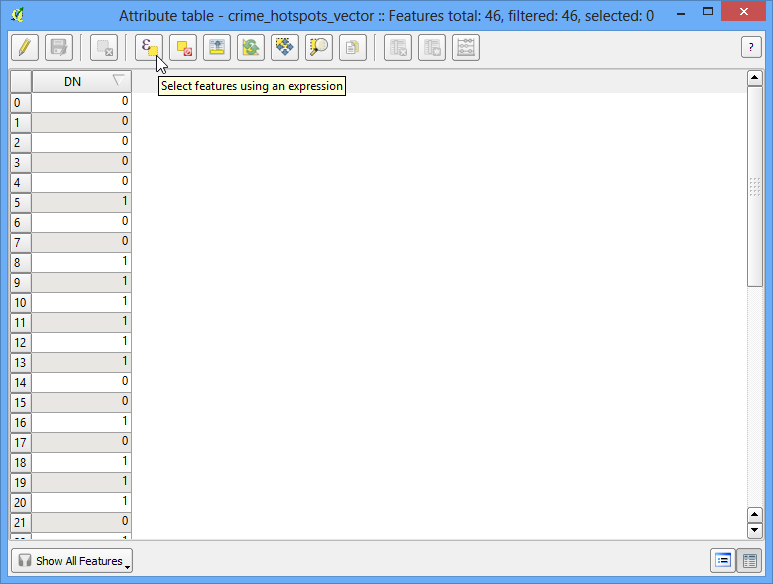

Determinarea lungimii liniilor și vizualizarea statisticilor
[ Download PDF
A4
Letter ]
QGIS dispune de funcții interne pentru calculul diverselor proprietăți geometrice ale unei entități - cum ar fi lungimea, zona, perimetrul etc. Acest tutorial vă arată cum să folosiți Calculatorul de Câmpuri pentru a adăuga, într-o nouă coloană, o valoare care reprezintă lungimea fiecărei entități.
Privire de ansamblu asupra activității
Vom folosi un fișier shape de tip polilinie, al căilor ferate nord-americane, pe baza căruia vom încerca să determinăm lungimea totală a sistemului feroviar din Statele Unite.
Alte competențe pe care le veți dobândi
Folosirea expresiilor pentru a selecta entitățile.
Reproiectarea un strat dintr-un Sistem de Coordonate de Referință (CRS) Geografic într-unul Proiectat.
Vizualizarea statisticilor pentru valorile unui atribut dintr-un strat.
Procedura
Mergeți la .

Navigați la fișierul ne_10m_railroads_north_america.zip și faceți clic pe OK.

În fereastra de dialog Select layers to add... selectați stratul ne_10m_railroads_north_america.shp.

După ce stratul este încărcat, veți observa că stratul conține linii, reprezentând căile ferate pentru întreaga Americă de Nord. Din moment ce dorim să calculăm lungimea liniilor doar pentru sistemul feroviar din SUA, trebuie să selectăm acele linii incluse în Statele Unite ale Americii. Faceți clic-dreapta pe denumirea stratului și selectați Open Attribute Table.

Stratul are un atribut numit sov_a3. Acesta este codficarea pe 3 litere a țării căreia îi aparține o anumită entitate. Putem folosi valoarea acestui atribut pentru a selecta entitățile din Statele Unite ale Americii.

În fereastra Attribute Table faceți clic pe butonul Select features using an expression.

Se va deschide o nouă fereastră de dialog Select By Expression. Căutați atributul sov_a3 sub Fields and Values în secțiunea Functions list. Efectuați dublu-clic pe el, pentru a-l adăuga zonei de text Expression. Completați expresia tastând "sov_a3" = 'USA'. Clic pe Select urmat de Close.

Înapoi, în fereastra principală a QGIS, veți vedea că toate liniile care se încadrează în Statele Unite ale Americii sunt selectate și apar în galben.

Acum, vom salva selecția noastră într-un nou fișier shape. Faceți clic dreapta pe stratul ne_10m_railroads_north_america și selectați Save Selection As....

Faceți clic pe Browse și denumiți fișierul de ieșire ca usa_railroads.shp. De asemenea, dorim să schimbăm CRS-ul stratului. Faceți clic pe butonul Browse din dreptul CRS.
Note
Funcțiile interne, care utilizează geometria entităților pentru calcule, folosesc unitățile CRS-ului stratului. Sistemele de Coordonate de Referință (CRS) Geografice, cum ar fi EPSG:4326 au ca unități gradele - astfel încât lungimea entităților va fi în grade iar suprafața ar putea fi în grade pătrate - lucru lipsit de sens. Este necesară utilizarea unui Sistem de Coordonate de Referință Proiectat, cu unitățile în metri sau picioare, pentru efectuarea calculelor.

Din moment ce suntem interesați în calculul lungimii, haideți să selectăm o proiecție echidistantă. Tastați north america equ în Filter. În panoul de rezultate de mai jos, selectați North_America_Equidistant_Conic EPSG: 102010 ca CRS. Faceți clic pe OK.

În fereastra de dialog Save vector layer as... bifați Add saved file to map și apăsați OK.

O dată ce s-a terminat procesul de export, veți vedea un nou strat usa_railroads încărcat în QGIS. Aveți posibilitatea să debifați caseta de lângă numele stratului ne_10m_railroads_north_america pentru a-l ascunde, atât timp cât nu mai avem nevoie de el.

Clic dreapta pe stratul usa_railroads și selectați Open Attribute Table.

Acum este timpul să adăugăm o coloană cu lungimea fiecărei entități. Puneți stratul în modul de editare, făcând clic pe butonul Toggle editing. O dată activat modul de editare, efectuați clic pe butonul Open field calculator.

În Field Calculator bifați Create a new field. Introduceți length_km ca Output field name. Selectați Decimal number (real) ca Output field type. Introduceți 2 în Precision. În panoul Function list, găsiți $length sub Geometry. Faceți dublu-clic pe funcție pentru a o adăuga în Expression. Completați expresia ca $length / 1000, deoarece unitățile CRS-ului stratului nostru sunt în metri și ne dorim ieșirea în km. Faceți clic pe OK.

Mergând înapoi la Attribute Table, veți observa o nouă coloană length_km. Faceți clic pe butonul Toggle editing pentru a salva modificările din tabela de atribute.

Acum, că avem lungimile fiecărei linii din stratul nostru, le putem însuma cu ușurință pe toate, pentru a găsi lungimea Totală. Mergeți la .

Selectați usa_railroads ca Input Vector layer. Alegeți length_km pentru Target field și faceți clic pe OK. Veți vedea apărând diverse statistici. Valoarea Sum reprezintă exact ceea ce căutăm, și anume lungimea totală a căilor ferate.
Note
Acest răspuns va diferi ușor în cazul în care s-a ales o proiecție diferită. În practică, lungimile drumurilor precum și alte caracteristici liniare sunt măsurate în teren, după care vor fi transmise ca atribute pentru setul de date. Metoda prezentată în acest capitol funcționează în absența unui astfel de atribut, fiind de fapt o aproximare a lungimii reale a liniilor.